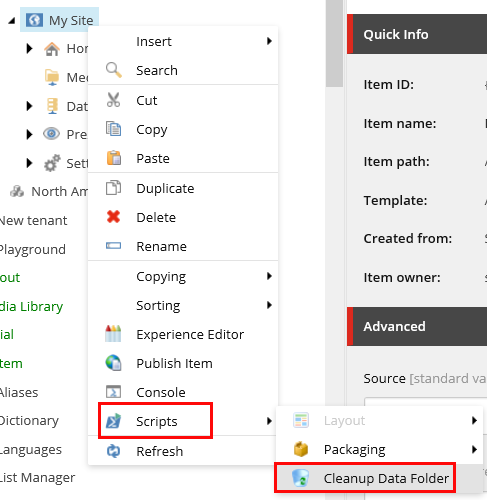

The SXA script library
SXA includes a number of scripts to help with the most common tasks.
SXA includes a number of PowerShell scripts to automate the most common tasks. The Sitecore PowerShell Extensions (SPE) module provides a command line and a scripting environment and enables you to use PowerShell from within Sitecore. In this way, you can run commands and write scripts according to Windows PowerShell syntax. Every SXA module that uses SPE has its own script library in: sitecore/System/Modules/PowerShell/Script Library/JSS SXA.
Note
PowerShell scripts can be used to automate tasks that you find yourself doing on a regular basis. To write your own scripts, or view code of existing scripts, use the PowerShell Integrated Scripting Environment (ISE). You can access this tool on the Sitecore Launchpad:
The types of SXA scripts vary from cleanup scripts to cmdlts that add insert options to items:
Scaffolding – scripts used during scaffolding to automate the process of site/site collection creation.
Context Menu – scripts that are available for editors using the Content Editor. For example, the cleanup data sources script:
 Cmdlets – a lightweight command that is used in SPE and can be reused by other developers.
Insert Item – scripts that extend the Insert section in the Content Editor.
The following table describes the available SXA script modules, their functions, descriptions, and type of script:
Module | Function | Description | Type of script |
|---|---|---|---|
Basic Site | Add Home Renderings | Builds the basic content structure of the site. | Scaffolding |
Multisite | Add Content fields | Decorates new Site Collection templates with additional fields. Adds Content and Title fields to a Page template. | Scaffolding |
Multisite | Set home item title field | Sets the home item title after the site is created. | Scaffolding |
Scaffolding | Add-JSSTenant | Contains all the functions used to create a new headless site collection. | Cmdlets |
Scaffolding | Get-AllJSSSite | Gets all headlesss sites. | Cmdlets |
Scaffolding | Get-AllJSSTenant | Gets all headlesss site collections. | Cmdlets |
Scaffolding | Get-JSSSiteDefinition | Gets headless site modules. | Cmdlets |
Scaffolding | Get-JSSTenantDefinition | Gets headless site collection modules. | Cmdlets |
Scaffolding | Install Headless Site module | Installs a headless site module. | Cmdlets |
Scaffolding | Install Headless Site Collection module | Installs a headless site collection module. | Cmdlets |
Scaffolding | Headless Site | Adds a script to the insert options in the context menu that lets users create a new headless site. | Insert item |
Scaffolding | Headless Site Collection | Adds a script to the insert options in the context menu that lets users create a new headless site collection. | Insert item |
Scaffolding | New-JSSTenant | Contains functions used to create a new headless site collection. | Cmdlets |
Scaffolding | New-JSSSite | Contains functions used to create a new headless site. | Cmdlets |